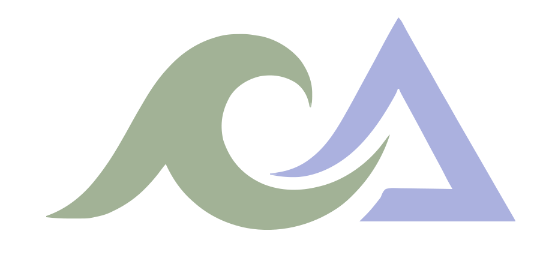

La situazione attuale
Raccogliamo le informazioni sui rapporti di lavoro, sulle attività ricorrenti e sui temi che richiedono attenzione.

Studio Lava Consulente del LavoroUn nuovo riferimento per la tua azienda
Il passaggio a un nuovo Studio richiede attenzione alle persone, alle informazioni e alle attività in corso. Partiamo dalla tua situazione per capire come organizzarlo.
Contatta lo StudioDa dove iniziamo
Nel primo incontro ci racconti come è organizzata oggi la gestione del personale e che cosa cerchi nel nuovo rapporto professionale. Esaminiamo le questioni aperte e le prossime scadenze, senza dare per scontato che ogni azienda abbia le stesse esigenze.
Il percorso
Raccogliamo le informazioni sui rapporti di lavoro, sulle attività ricorrenti e sui temi che richiedono attenzione.
Individuiamo il materiale necessario e gli adempimenti da considerare. Le verifiche dipendono dalla situazione concreta.
Chiariamo tempi, responsabilità e scambio delle informazioni, così sai chi segue le attività della tua azienda.
Una scelta da valutare
Attività già avviate, scadenze e accordi in essere incidono sull'organizzazione del passaggio. Ne parliamo prima di definire tempi e modalità, così puoi decidere con gli elementi necessari.
Parliamone
Descrivici la situazione della tua azienda e le questioni che vorresti affrontare.